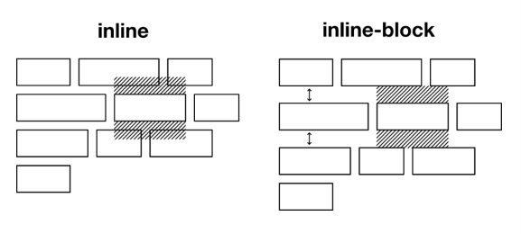
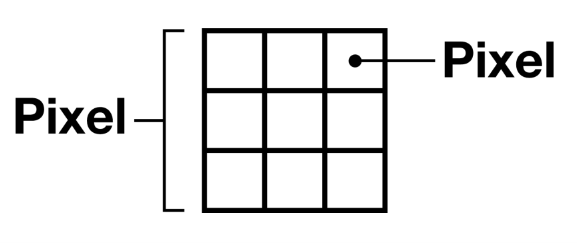
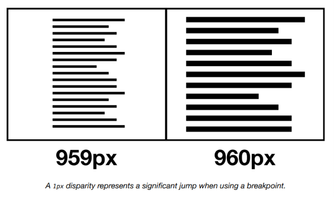
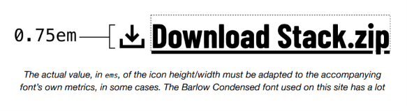
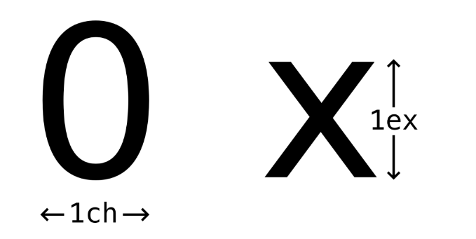

Unidades¶
Todo lo que ves en la web está compuesto por los pequeños puntos de luz que conforman la pantalla de tu dispositivo: los píxeles. Por lo tanto, al medir los artefactos que componen nuestras interfaces, tiene sentido pensar en términos de píxeles y usar la unidad CSS px. ¿O no?
Las geometrías de los píxeles de las pantallas varían enormemente ↗, y la mayoría de las pantallas modernas emplean renderizado sub-píxel, que es la manipulación de los componentes de color de píxeles individuales para suavizar bordes dentados y producir una resolución más alta. La noción de 1px percibido es más difusa de lo que a menudo se representa.

La Samsung Galaxy Tab S 10.5 alterna la disposición de los subpíxeles entre píxeles. Cada dos píxeles está compuesto de manera diferente.
Las resoluciones de pantalla — cuántos píxeles tienen las pantallas — también difieren. En consecuencia, mientras que un "pixel CSS" (1px en CSS) puede aproximarse a un píxel de "dispositivo" o "hardware" en una pantalla de baja resolución, una pantalla de alta resolución puede ofrecer múltiples píxeles de dispositivo por cada 1px de CSS. Así que hay píxeles, y luego hay píxeles de píxeles.

Basta decir que, aunque las pantallas están hechas de píxeles, los píxeles no son regulares, inmutables o constantes. Una caja de 400px vista por un usuario que ha hecho zoom simplemente no tiene 400px en CSS. Puede que ni siquiera haya tenido 400px en píxeles de dispositivo antes de que activaran el zoom.
Trabajar con la unidad px en CSS no es incorrecto como tal; no verás ningún mensaje de error. Pero nos anima a trabajar bajo una premisa falsa: que la perfección del píxel ↗ es tanto alcanzable como deseable.
Escalado y accesibilidad¶
Diseñar usando la unidad px no solo nos anima a adoptar la mentalidad equivocada: también tiene limitaciones manifiestas. Por un lado, cuando configuras tus fuentes usando px, los navegadores asumen que quieres fijar las fuentes en ese tamaño. En consecuencia, el tamaño de fuente elegido por el usuario en la configuración de su navegador se ignora.
Con los navegadores modernos que ahora soportan el zoom de página completa ↗ (donde todo, incluido el texto, se amplía proporcionalmente), esto a menudo se descarta como un problema resuelto. Sin embargo, como Evan Minto descubrió ↗, hay más usuarios que ajustan su tamaño de fuente predeterminado en la configuración del navegador que usuarios de los navegadores Edge o Internet Explorer. Es decir: ignorar a los usuarios que ajustan su tamaño de fuente predeterminado tiene tanto impacto como ignorar navegadores enteros.
Las unidades em, rem, ch y ex no presentan ese problema porque son unidades relativas al tamaño de fuente predeterminado del usuario, configurado en su sistema operativo y/o navegador. Los navegadores traducen los valores que usan estas unidades a píxeles, por supuesto, pero de una manera sensible al contexto y la configuración. Las unidades relativas son mediadoras.
Relatividad¶
Los navegadores y sistemas operativos típicamente solo le permiten al usuario adaptar el tamaño de fuente base o del cuerpo. Esto se puede expresar como 1rem: exactamente una vez el tamaño de fuente raíz. Tus elementos de párrafo deberían ser siempre 1rem, porque representan texto del cuerpo. No necesitas establecer 1rem explícitamente, porque es el valor predeterminado.
Los elementos, como los encabezados, deben establecerse relativamente más grandes — de lo contrario se perderá la jerarquía. Mi <h2> podría ser 2.5rem, por ejemplo.
Si bien las unidades em, rem, ch y ex son todas medidas de texto, pueden aplicarse por supuesto a las propiedades width, height, margin y padding (entre otras). Es solo que el texto es la base del medio web, y estas unidades son un recordatorio conveniente y constante de este hecho. Aprende a extrapolar tus layouts a partir de las dimensiones intrínsecas de tu texto y tus diseños serán hermosos.
Conversión innecesaria¶
Mucha gente se ocupa convirtiendo entre rem y px, asegurándose de que cada valor que usan equivalga a un valor entero de píxeles. Por ejemplo, si el tamaño base es 16px, 2.4375rem sería 39px, pero 2.43rem sería 38.88px.
No hay necesidad de hacer una conversión precisa, ya que los navegadores emplean renderizado sub-píxel y/o redondeo para igualar las cosas automáticamente. Es menos verboso usar fracciones simples como 1.25rem, 1.5rem, 1.75rem, etc. — o dejar que calc() haga el trabajo pesado en tu Modular scale.
Proporcionalidad y mantenibilidad¶
Mi <h2> es 2.5 veces el tamaño base/raíz. Si agrando el tamaño raíz, mi <h2> — y todas las demás dimensiones establecidas en múltiplos basados en rem — se ampliarán proporcionalmente. La ventaja es que escalar toda la interfaz es trivial:
Si hubiera adoptado px en su lugar, las implicaciones para el mantenimiento serían claras: la falta de tamaño relativo y proporcional requeriría ajustar elementos individuales caso por caso.
Unidades de viewport¶
En Every Layout, evitamos las consultas basadas en ancho (@media). Representan la codificación rígida de reconfiguraciones de layout y no son sensibles al espacio disponible inmediato que realmente se le otorga al elemento o componente en cuestión. Escalar la interfaz en un breakpoint discreto, como en el último ejemplo, es arbitrario. ¿Qué tiene de especial 960px? ¿Realmente podemos decir que el tamaño más pequeño es aceptable en 959px? Una disparidad de 1px representa un salto significativo cuando se usa un breakpoint.

Las unidades de viewport ↗ son relativas al tamaño del viewport del navegador. Por ejemplo, 1vw es igual al 1% del ancho de la pantalla, y 1vh es igual al 1% de la altura de la pantalla. Usando unidades de viewport y calc() podemos crear un algoritmo mediante el cual las dimensiones se escalan proporcionalmente, pero desde un valor mínimo.
La parte 1rem de la ecuación asegura que el font-size nunca caiga por debajo del valor predeterminado (sistema/navegador/usuario). Es decir, + 0vw es 1rem.
La unidad em¶
La unidad em es a la unidad rem lo que una container query ↗ es a una @media. Pertenece al contexto inmediato en lugar del documento externo. Si quisiera agrandar ligeramente el font-size de un elemento <strong> dentro de mi <h2>, podría usar unidades em:
El font-size del <strong> es ahora 1.125 × 2.5rem, o 2.53125rem. Si estableciera un valor rem para el <strong> en su lugar, no escalaría con su padre <h2>: si cambiara el valor h2, tendría que cambiar también el valor CSS de h2 strong.
Como regla general, las unidades em son mejores para dimensionar elementos inline, y las unidades rem son mejores para elementos en bloque. Los iconos SVG son candidatos perfectos ↗ para dimensionamiento basado en em, ya que acompañan o reemplazan texto.

El valor real, en
em, de la altura/ancho del icono debe adaptarse a las métricas de la fuente que lo acompaña, en algunos casos. La fuente Barlow Condensed utilizada en este sitio tiene mucho espacio interno que compensar — de ahí el valor0.75rem.
Las unidades ch y ex¶
Las unidades ch y ex pertenecen al ancho (aproximado) y la altura de un carácter respectivamente. 1ch se basa en el ancho de un 0, y 1ex es igual a la altura del carácter x de tu fuente — también conocido como corpus size o tamaño del corpus ↗.

En la sección Axiomas, la unidad ch se usa para restringir el measure ↗ (medida) de los elementos para la legibilidad. Dado que la medida es una cuestión de caracteres por línea, ch (abreviatura de character) es la única unidad apropiada para esta tarea de estilo.
Un <h2> y un <h3> pueden tener diferentes valores de font-size, pero el mismo (máximo) measure:
El ancho, en píxeles, de una línea completa de texto se extrapola de la relación entre el font-size basado en rem y el max-width basado en ch. Al delegar un algoritmo para determinar este valor — en lugar de codificarlo rígidamente como un width basado en px — evitamos errores frecuentes y graves. En términos de layout CSS, un error es contenido malformado u oscurecido: pérdida de datos para los seres humanos.